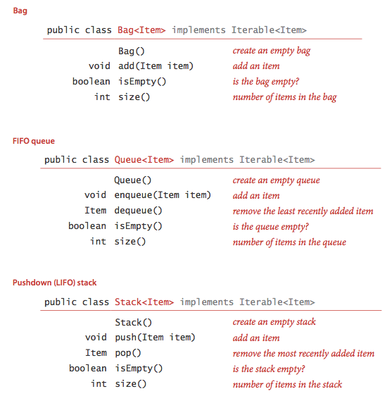
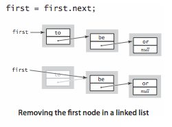
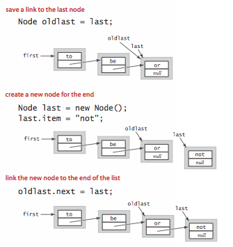

Bags, Queues, and Stacks
Several fundamental data types involve collections of objects. Specifically, the set of values is a collection of objects, and the operations revolve around adding, removing, or examining objects in the collection. In this section, we consider three such data types, known as the bag, the queue, and the stack. They differ in the specification of which object is to be removed or examined next.
§ APIs.
We define the APIs for bags, queues, and stacks. Beyond the basics, these APIs reflect two Java features: generics and iterable collections.
- Generics.
An essential characteristic of collection ADTs is that we should
be able to use them for any type of data.
A specific Java mechanism known as generics enables this capability.
The notation
<Item>after the class name in each of our APIs defines the nameItemas a type parameter, a symbolic placeholder for some concrete type to be used by the client. You can readStack<Item>as "stack of items." For example, you can write code such as
to use a stack forStack<String> stack = new Stack<String>(); stack.push("Test"); ... String next = stack.pop();Stringobjects. - Autoboxing.
Type parameters have to be instantiated as reference types, so Java automatically
converts between a primitive type and its corresponding wrapper type in
assignments, method arguments, and arithmetic/logic expressions.
This conversion enables us to use generics with primitive types, as
in the following code:
Automatically casting a primitive type to a wrapper type is known as autoboxing, and automatically casting a wrapper type to a primitive type is known as unboxing.Stack<Integer> stack = new Stack<Integer>(); stack.push(17); // autoboxing (int -> Integer) int i = stack.pop(); // unboxing (Integer -> int)
- Iterable collections.
For many applications, the client's requirement is just to process each
of the items in some way, or to iterate through the items in the
collection.
Java's foreach statement supports this paradigm.
For example, suppose that
collectionis aQueue<Transaction>. Then, if the collection is iterable, the client can print a transaction list with a single statement:for (Transaction t : collection) StdOut.println(t);
- Bags. A bag is a collection where removing items is not supported—its purpose is to provide clients with the ability to collect items and then to iterate through the collected items. Stats.java is a bag client that reads a sequence of real numbers from standard input and prints out their mean and standard deviation.
- FIFO queues. A FIFO queue is a collection that is based on the first-in-first-out (FIFO) policy. The policy of doing tasks in the same order that they arrive is one that we encounter frequently in everyday life: from people waiting in line at a theater, to cars waiting in line at a toll booth, to tasks waiting to be serviced by an application on your computer.
- Pushdown stack. A pushdown stack is a collection that is based on the last-in-first-out (LIFO) policy. When you click a hyperlink, your browser displays the new page (and pushes onto a stack). You can keep clicking on hyperlinks to visit new pages, but you can always revisit the previous page by clicking the back button (popping it from the stack). Reverse.java is a stack client that reads a sequence of integers from standard input and prints them in reverse order.
- Arithmetic expression evaluation.
Evaluate.java is a stack client
that evaluates fully parenthesized arithmetic expressions.
It uses Dijkstra's 2-stack algorithm:
- Push operands onto the operand stack.
- Push operators onto the operator stack.
- Ignore left parentheses.
- On encountering a right parenthesis, pop an operator, pop the requisite number of operands, and push onto the operand stack the result of applying that operator to those operands.
§ Array and resizing array implementations of collections.
- Fixed-capacity stack of strings. FixedCapacityStackOfString.java implements a fixed-capacity stack of strings using an array.
- Fixed-capacity generic stack. FixedCapacityStack.java implements a generic fixed-capacity stack.
- Array resizing stack.
ResizingArrayStack.java
implements a generic stack using a resizing array.
With a resizing array, we dynamically adjust the size of the array
so that it is both sufficiently large to hold all of the items and not
so large as to waste an excessive amount of space.
We double the size of the array in
push()if it is full; we halve the size of the array inpop()if it is less than one-quarter full. - Array resizing queue. ResizingArrayQueue.java implements the queue API with a resizing array.
§ Linked lists.
A linked list is a recursive data structure that is either empty (null) or a reference to a node having a generic item and a reference to a linked list. To implement a linked list, we start with a nested class that defines the node abstraction
private class Node { Item item; Node next; }
- Building a linked list.
To build a linked list that contains the items
to,be, andor, we create aNodefor each item, set the item field in each of the nodes to the desired value, and set thenextfields to build the linked list.
- Insert at the beginning.
The easiest place to insert a new node in a linked list is at the beginning.

- Remove from the beginning.
Removing the first node in a linked list is also easy.

- Insert at the end.
To insert a node at the end of a linked list, we maintain a link to the last node in
the list.

- Traversal.
The following is the idiom for traversing the nodes in a linked list.
for (Node x = first; x != null; x = x.next) { // process x.item }
§ Linked-list implementations of collections.
- Linked list implementation of a stack.
Stack.java implements
a generic stack using a linked list.
It maintains the stack as a linked list, with the top of the stack at the
beginning, referenced by an instance variable
first. Topush()an item, we add it to the beginning of the list; topop()an item, we remove it from the beginning of the list. - Linked list implementation of a queue.
Program Queue.java implements
a generic FIFO queue using a linked list.
It maintains the queue as a linked list in order from least recently to
most recently added items, with the beginning of the queue
referenced by an instance variable
firstand the end of the queue referenced by an instance variablelast. Toenqueue()an item, we add it to the end of the list; todequeue()an item, we remove it from the beginning of the list. - Linked list implementation of a bag.
Program Bag.java implements
a generic bag using a linked list.
The implementation is the same as Stack.java
except for changing the name of
push()toadd()and removingpop().
§ Iteration.
To consider the task of implementing iteration, we start with a snippet of client code that prints all of the items in a collection of strings, one per line:
Stack<String> collection = new Stack<String>(); ... for (String s : collection) StdOut.println(s); ...
This foreach statement is shorthand for the following while
statement:
Iterator<String> i = collection.iterator(); while (i.hasNext()) { String s = i.next(); StdOut.println(s); }To implement iteration in a collection:
- Include the following
importstatement so that our code can refer to Java's java.util.Iterator interface:import java.util.Iterator;- Add the following to the class declaration, a promise to provide an
iterator()method, as specified in the java.lang.Iterable interface:implements Iterable<Item>- Implement a method
iterator()that returns an object from a class that implements theIteratorinterface:public Iterator<Item> iterator() { return new LinkedIterator(); }- Implement a nested class that implements the
Iteratorinterface by including the methodshasNext(),next(), andremove(). We always use an empty method for the optionalremove()method because interleaving iteration with operations that modify the data structure is best avoided.
- The nested class
LinkedIteratorin Bag.java illustrates how to implement a class that implements theIteratorinterface when the underlying data structure is a linked list.- The nested class
ArrayIteratorin ResizingArrayBag.java does the same when the underlying data structure is an array.
 Autoboxing Q + A
Autoboxing Q + A
Q. How does autoboxing handle the following code fragment?
Integer a = null; int b = a;
A. It results in a run-time error. Primitive type can store every
value of their corresponding wrapper type except null.
Q. Why does the first group of statements print true,
but the second false?
Integer a1 = 100; Integer a2 = 100; System.out.println(a1 == a2); // true Integer b1 = new Integer(100); Integer b2 = new Integer(100); System.out.println(b1 == b2); // false Integer c1 = 150; Integer c2 = 150; System.out.println(c1 == c2); // false
A. The second prints false because b1 and
b2 are references to different Integer objects.
The first and third code fragments rely on autoboxing.
Surprisingly the first prints true because values between -128 and
127 appear to refer to the same immutable Integer objects (Java's implementation
of valueOf() retrieves a cached values if the integer is between
-128 and 127),
while Java constructs new objects for each integer outside this range.
Here is another Autoboxing.java anomaly.
Generics Q + A
Q. Are generics solely for auto-casting?
A. No, but we will use them only for "concrete parameterized types", where each data type is parameterized by a single type. The primary benefit is to discover type-mismatch errors at compile time instead of run time. There are other more general (and more complicated) uses of generics, including wildcards. This generality is useful for handling subtypes and inheritance. For more information, see this Generics FAQ and this Java generics tutorial.
Q. Can concrete parameterized types be used in the same way as normal types?
A. Yes, with a few exceptions (array creation,
exception handling, with instanceof, and in a class literal).
Q. Can I make the Node class static?
A.
For LinkedStackOfString.java,
you can do so with no other changes and save 8 bytes (of inner class overhead)
per node.
However, the nested class Node in LinkedStack.java
uses the type information of Item from the outer class, so you would need
to
do a bit of extra work to make it static.
Stack.java accomplishes
this by making the nested class (and the nester iterator) generic: there are
three separate generic type parameters, each of which is named Item.
Q. Why do I get a "can't create an array of generics" error when I try to create an array of generics?
public class ResizingArrayStack<Item> { Item[] a = new Item[1];
A. Unfortunately, creating arrays of generics is not possible in Java 1.5.
The underlying cause is that arrays in Java are covariant,
but generics are not.
In other words, String[] is a subtype of
Object[], but Stack<String> is not a
subtype of Stack<Object>.
To get around this defect, you need to perform an unchecked cast
as in ResizingArrayStack.java.
ResizingArrayStackWithReflection.java
is an (unwieldy) alternative that avoids the unchecked cast by using reflection.
Q. So, why are arrays covariant?
A.
Many programmers (and programming language theorists)
consider covariant arrays to be a serious defect in Java's type system:
they incur unnecessary run-time performance overhead
(for example, see
ArrayStoreException)
and can lead to subtle bugs.
Covariant arrays were introduced in Java to circumvent
the problem that Java didn't originally include
generics in its design, e.g., to
implement Arrays.sort(Comparable[]) and have it be callable with an
input array of type String[].
Q. Can I create and return a new array of a parameterized type, e.g.,
to implement a toArray() method for a generic queue?
A. Not easily.
You can do it using reflection provided that the client passes an object of the
desired concrete type to toArray()
This is the (awkward) approach taken by Java's Collection Framework.
GenericArrayFactory.java
provides an alternate solution in which the client passes a variable of type
Class.
See also Neal Gafter's blog for a solution that uses
type
tokens.
Iterator Q + A
Q. Why is the construct called foreach if it uses the keyword
for?
A. Other languages use the keyword foreach, but the Java developers
did
not want to introduce a new keyword and break backward compatibility.
Q. Are Strings iterable?
A. No.
Q. Are arrays Iterable?
A. No. You can use the foreach syntax with them. However,
you can not pass an array to a method that expects an Iterable
or return an array from a method which returns an Iterable.
This would be convenient, but it doesn't work that way.
Q. What's wrong with the following code fragment?
String s; for (s : listOfStrings) System.out.println(s);
A. The enhanced for loop requires that the iterating variable be declared inside the loop.